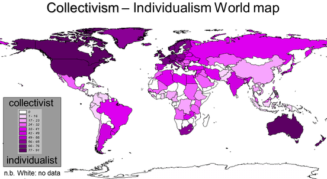
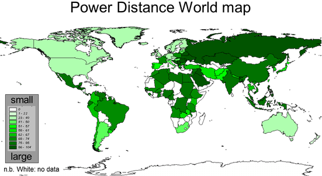
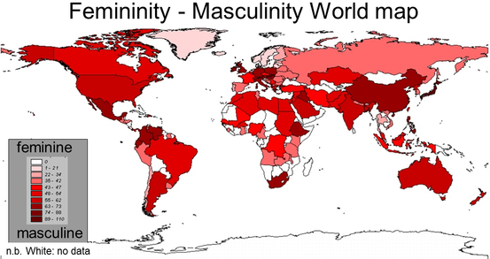
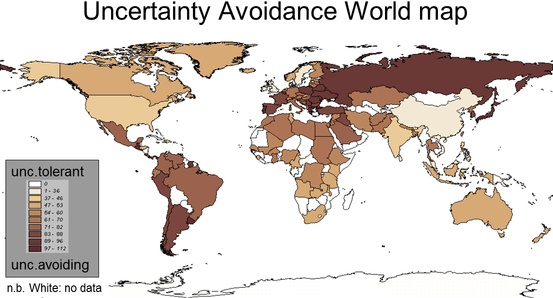
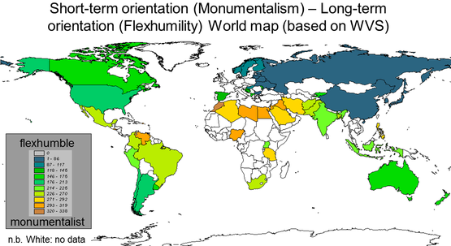
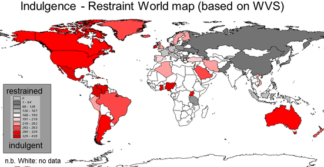

Geert Hofstede’s six dimensions of national culture
Individualism is the extent to which people feel independent, as opposed to being interdependent as members of larger wholes.1
1
Power Distance is the extent to which the less powerful members of organizations and institutions (like the family) accept and expect that power is distributed unequally.1
1
Masculinity is the extent to which the use of force in endorsed socially. Men are supposed to be from Mars, women from Venus. Winning is important for both genders. Quantity is important and big is beautiful. In a feminine society, the genders are emotionally closer. Competing is not so openly endorsed, and there is sympathy for the underdog.1
1
Uncertainty avoidance deals with a society’s tolerance for uncertainty and ambiguity.1
1
In a long-time-oriented culture, the basic notion about the world is that it is in flux, and preparing for the future is always needed. In a short-time-oriented culture, the world is essentially as it was created, so that the past provides a moral compass, and adhering to it is morally good.1
1
In an indulgent culture it is good to be free. Doing what your impulses want you to do, is good. Friends are important and life makes sense. In a restrained culture, the feeling is that life is hard, and duty, not freedom, is the normal state of being.1
1